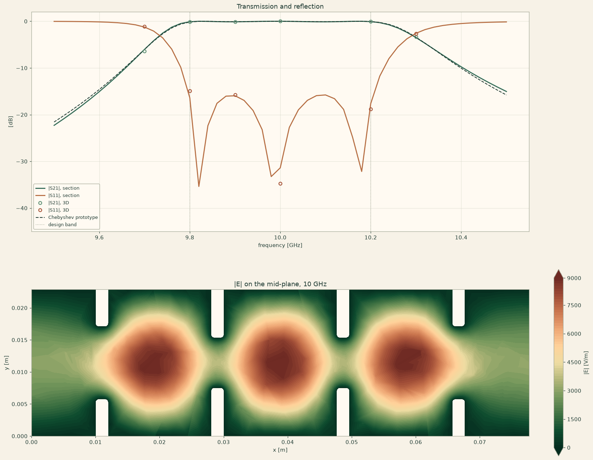
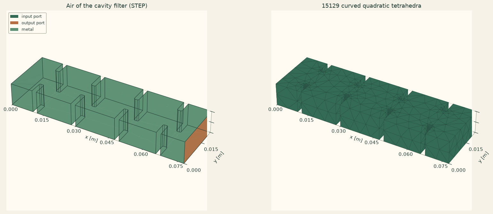

Docs › Examples › Cascaded rectangular cavity filter
Microwaves, waveguide filters · 3D
Cascaded rectangular cavity filter
Three rectangular cavities in a WR-90 waveguide, coupled through rounded slots in 2 mm walls, form a three-pole Chebyshev bandpass filter for 9.8 to 10.2 GHz.

What it computes
OneSimulation derives the coupling coefficient and external quality factor from the Chebyshev prototype, and solves the time-harmonic Maxwell equation in the air of the filter with second-order Nedelec elements on curved tetrahedra and waveguide ports; the slots span the full height, so the H-plane section of the same part is an exact 2D reduction, solved as independent cross-check, and the closed middle cavity is solved for its resonance. The script that builds the STEP files comes with the notebook.
What it checks
The design needs k12 = 0.0646 and Qe = 14.68; the section follows the Chebyshev response to 0.028 in |S21|^2 with half-power edges within 2 MHz, the 3D filter agrees with the section to 0.022 in |S21|^2 and reaches a return loss of 15.7 dB in the ripple band (section 15.8 dB, prototype 16.4 dB); the closed cavity resonates at the exact TE101 frequency to 8e-5, power is conserved to 4e-13 and S21 = S12 to 4e-14.
Geometry
The notebook starts at the import of the CAD files cascaded_cavity_filter.step, cascaded_cavity_filter_cavity.step: STEP (AP242), readable by any CAD program, with the names of the faces that the boundary conditions use. Put them next to the notebook.

The geometry script
The script cascaded_cavity_filter_geometry.py builds the geometry with the CAD objects of OneSimulation and writes the files. Change a dimension there, run it, and run the notebook again.
"""Geometry of the OneSimulation example "Cascaded rectangular cavity filter".
Builds with the CAD objects of OneSimulation the air of a WR-90 waveguide (22.86 mm x 10.16 mm,
axis along x, broad side along y, narrow side along z) that holds three rectangular cavities in a
row, separated from each other and from the feeding guides by metal walls 2 mm thick. Each wall
has a centred coupling slot over the full height of the guide; its edges are rounded with a
radius of 0.5 mm, as a milling cutter leaves them. The slot widths and the cavity
lengths realize a three-pole Chebyshev bandpass filter (0.1 dB ripple, 9.8 to 10.2 GHz): coupling
coefficients and external quality factor from the low-pass prototype, turned into slots and
lengths with the impedance-inverter formulas of Matthaei, Young and Jones, and refined on the
H-plane section for the 2 mm walls and the rounded edges. 10 mm of guide lead to the first and from the last wall.
Files: cascaded_cavity_filter.step (the filter, faces port_in, port_out, metal and, within metal,
the coupling walls as walls) and
cascaded_cavity_filter_cavity.step (the middle cavity closed, all faces in metal).
"""
import numpy as np
from onesim.cad.d3 import Box
a, b, wall, lead, radius = 0.02286, 0.01016, 0.002, 0.010, 0.0005
slots = (0.01131, 0.00780, 0.00780, 0.01131)
spacings = (0.01804, 0.01960, 0.01804)
centres = lead + wall / 2 + np.concatenate(([0.0], np.cumsum(spacings)))
air = Box(length=centres[-1] + wall / 2 + lead, width=a, height=b).named("guide")
for x, width in zip(centres, slots):
for y, side in ((-0.001, "y_max"), ((a + width) / 2, "y_min")):
block = Box(
length=wall,
width=(a - width) / 2 + 0.001,
height=b + 0.002,
origin=(x - wall / 2, y, -0.001),
)
block = block.fillet(
radius,
edges=block.select(
edges=lambda edge, side=side: set(edge.faces)
in ({"x_min", side}, {"x_max", side})
),
)
air = air - block.named("wall")
faces = air.boundaries
walls = air.select(faces=lambda face: face.id.startswith("wall."))
air.grouped(
port_in=faces["guide.x_min"],
port_out=faces["guide.x_max"],
walls=walls,
metal=walls
| faces["guide.y_min"]
| faces["guide.y_max"]
| faces["guide.z_min"]
| faces["guide.z_max"],
).save("cascaded_cavity_filter.step")
closed = Box(length=spacings[1] - wall, width=a, height=b)
closed.grouped(metal=closed.boundaries.all).save("cascaded_cavity_filter_cavity.step")The notebook
The complete notebook, cell by cell. Run it to produce the figures and the comparison printout.
A section of rectangular waveguide between two metal walls is a cavity resonator; a slot in each wall lets the TE\(_{10}\) wave in and out. A single cavity passes a narrow peak. Three cavities in a row, each coupled to its neighbours, pass a flat band and reject the frequencies outside it much more strongly: a cascaded cavity filter.
Design from coupled resonators. A three-pole Chebyshev filter with 0.1 dB ripple has the low-pass prototype values \(g_0=g_4=1\), \(g_1=g_3=1.0316\), \(g_2=1.1474\). For the pass band 9.8 to 10.2 GHz in a WR-90 guide (\(a=22.86\) mm, \(b=10.16\) mm) the relative bandwidth, measured in guide wavelength as dispersive waveguide filters require, is \(w_\lambda=(\lambda_g(f_1)-\lambda_g(f_2))/\lambda_g(f_0)\), and the resonators need (Hong and Lancaster, Microstrip Filters for RF/Microwave Applications, §3.3; Matthaei, Young and Jones, Microwave Filters, Impedance-Matching Networks, and Coupling Structures, §8.06)
Impedance inverters turn these into slot widths and cavity lengths. The slot edges are rounded with a radius of 0.5 mm, as a milling cutter leaves them; this also removes the field singularity of a sharp metal edge, so that coarse meshes already give converged results. Refined on the H-plane section for the 2 mm walls and the rounded edges, the filter has:
| | outer walls | inner walls | outer cavities | middle cavity | |---|---|---|---|---| | slot width [mm] | 11.31 | 7.80 | | | | wall centre to wall centre [mm] | | | 18.04 | 19.60 |
| faces | condition | |---|---| | port_in | waveguide port, TE\(_{10}\) fed with 1 W, TE\(_{20}\) absorbed | | port_out | waveguide port, TE\(_{10}\) and TE\(_{20}\) absorbed | | metal (guide and walls) | perfect electric conductor |
OneSimulation solves \(\nabla\times(\mu_r^{-1}\nabla\times\mathbf E)-k_0^2\varepsilon_r\mathbf E=0\) with second-order Nédélec elements. The files cascaded_cavity_filter.step (the filter) and cascaded_cavity_filter_cavity.step (the middle cavity, closed) are written by cascaded_cavity_filter_geometry.py with the CAD objects of OneSimulation.
Reference. (i) The prototype response \(|S_{21}|^2=1/(1+\varepsilon^2T_3^2(\Omega))\) with \(\varepsilon^2=10^{0.01}-1\) and \(\Omega=\frac{2}{w_\lambda}\frac{\lambda_{g0}-\lambda_g}{\lambda_{g0}}\); in the pass band the reflection stays below \(-16.4\) dB. (ii) The slots span the full height, so the TE\(_{10}\) field does not vary across it and the 3D problem reduces exactly to the scalar Helmholtz equation on the H-plane section: an independent cross-check. (iii) The closed middle cavity of length \(d\) resonates at \(f_{101}=\frac c2\sqrt{a^{-2}+d^{-2}}\) (Pozar, Microwave Engineering, 4th ed., §6.3). (iv) A lossless filter conserves power and is reciprocal, \(S_{21}=S_{12}\).
import numpy as np
from onesim.cad.d2 import Plane
from onesim.cad.exchange import load
from onesim.materials import VACUUM_PERMEABILITY, VACUUM_PERMITTIVITY
from onesim.materials.electromagnetic import IsotropicElectromagneticMaterial
from onesim.meshing import TetrahedralMesher, TriangularMesher, with_order
from onesim.numerics import Numerics
from onesim.numerics.fem import FiniteElement, Lagrange, Nedelec
from onesim.numerics.linear import ComplexSparseDirect
from onesim.physics.electromagnetics import (
FrequencyDomainMaxwell,
PerfectElectricConductor,
SectionWaveguidePort,
electromagnetic_modes,
scattering_parameters,
)
from onesim.simulation import Problem, Simulation
from onesim.visualization import plots, theme
theme.set()
light = 1 / np.sqrt(VACUUM_PERMEABILITY * VACUUM_PERMITTIVITY)Design values
The coupling coefficient and the external quality factor the resonators must have.
low, high, ripple = 9.8e9, 10.2e9, 10**0.01 - 1
g = np.array((1.0, 1.0316, 1.1474, 1.0316, 1.0))
guide_wavelength = lambda f: 1 / np.sqrt((f / light) ** 2 - (1 / (2 * 0.02286)) ** 2)
centre = np.sqrt(low * high)
spread = (guide_wavelength(low) - guide_wavelength(high)) / guide_wavelength(centre)
print(
f"centre {centre / 1e9:.4f} GHz, relative bandwidth in guide wavelength {spread:.4f}; "
f"coupling coefficient k12 = k23 = {spread / np.sqrt(g[1] * g[2]):.4f}, external quality factor Qe = {g[0] * g[1] / spread:.2f}"
)Geometry and mesh
load reads the filter and the closed cavity; section at half height gives the H-plane section, whose sides keep the face names. The 3D mesh has tetrahedra of at most 5 mm that follow the rounded slot edges; with_order places their middle nodes on the curved faces. The section has triangles of 1.5 mm, 0.4 mm on the walls, and a second section mesh with 0.2 mm checks its convergence.
guide, closed = load("cascaded_cavity_filter.step"), load(
"cascaded_cavity_filter_cavity.step"
)
faces = guide.boundaries
width, height = guide.size[1], guide.size[2]
section = guide.section((0, 0, 1), origin=(0, 0, height / 2))
mesh = with_order(
TetrahedralMesher(target_size=0.005, curvature_angle=1.5, grading=0.8).generate(
guide
),
2,
)
section_meshes = {
size: TriangularMesher(target_size=0.0015, local_sizes={"walls": size}).generate(
section
)
for size in (0.0004, 0.0002)
}
view = plots.Camera(elevation=35, azimuth=-60)
fig = plots.figure(1, 2, size=(15, 6))
plots.geometry(
guide,
selection={
"input port": faces.port_in,
"output port": faces.port_out,
"metal": faces.metal,
},
labels=False,
camera=view,
title="Air of the cavity filter (STEP)",
ax=fig[0],
)
plots.mesh(
mesh,
groups=("all",),
legend=False,
camera=view,
title=f"{mesh.cell_count} curved quadratic tetrahedra",
ax=fig[1],
)
plots.show()Closed cavity
electromagnetic_modes returns the lowest resonance of the closed middle cavity.
model = lambda frequency, domain, options: FrequencyDomainMaxwell(
domain=domain,
frequency=frequency,
material=IsotropicElectromagneticMaterial(),
phasor_convention="exp(-i*omega*t)",
amplitude_convention="peak",
**options,
)
numerics = lambda element: Numerics(
spatial=FiniteElement(element=element), linear_solver=ComplexSparseDirect()
)
cavity_model = model(10e9, closed.volume, {})
modes = electromagnetic_modes(
Simulation(
problem=Problem(
name="Closed cavity",
geometry=closed,
physics=(cavity_model,),
boundary_conditions=(
PerfectElectricConductor(
physics=cavity_model, boundary=closed.boundaries.metal
),
),
),
mesh=TetrahedralMesher(target_size=0.004).generate(closed),
numerics=numerics(Nedelec(order=2)),
).solve_stationary(),
cavity_model,
mode_count=1,
target_frequency=10e9,
)
f101 = light / 2 * np.hypot(1 / closed.size[1], 1 / closed.size[0])
print(
f"closed middle cavity, TE101: computed {modes.frequencies.real[0] / 1e9:.5f} GHz, exact {f101 / 1e9:.5f} GHz, "
f"relative difference {abs(modes.frequencies.real[0] / f101 - 1):.1e}"
)Filter
solve adds the two ports (fed at fed) and the metal and returns the result with its model. The 3D filter is solved at six frequencies across the pass band and its flanks and fed from the other side at 10 GHz for the reciprocity check; the section is swept from 9.5 to 10.5 GHz in steps of 20 MHz, and solved on the finer mesh on the lower flank.
solve = lambda m, part, mesh, element, fed: (
Simulation(
problem=Problem(
name="Cavity filter",
geometry=part,
physics=(m,),
boundary_conditions=(
SectionWaveguidePort(
physics=m,
boundary=part.boundaries[fed],
modes=2,
incident_power=1.0,
),
SectionWaveguidePort(
physics=m,
boundary=part.boundaries[
"port_out" if fed == "port_in" else "port_in"
],
modes=2,
),
PerfectElectricConductor(physics=m, boundary=part.boundaries.metal),
),
),
mesh=mesh,
numerics=numerics(element),
).solve_stationary(),
m,
)
in_3d = lambda frequency, fed="port_in": solve(
model(frequency, guide.volume, {}), guide, mesh, Nedelec(order=2), fed
)
on_section = lambda frequency, size=0.0004: scattering_parameters(
*solve(
model(frequency, section.domain(), {"polarization": "Ez"}),
section,
section_meshes[size],
Lagrange(order=2),
"port_in",
)
)
coarse = np.array((9.7e9, 9.8e9, 9.9e9, 10.0e9, 10.2e9, 10.3e9))
fine = np.arange(9.5e9, 10.501e9, 0.02e9)
runs = {f: in_3d(f) for f in coarse}
sweep = {
"3D": {f: scattering_parameters(*run) for f, run in runs.items()},
"section": {f: on_section(f) for f in fine},
}
reverse = {10.0e9: scattering_parameters(*in_3d(10.0e9, "port_out"))}
study = {size: on_section(9.75e9, size) for size in section_meshes}Results
The transmitted power of the 3D filter, of the section and of the prototype; the return loss in the ripple band; the half-power edges; power balance, reciprocity, the section mesh study and the agreement of 3D and section.
omega = (
lambda f: 2
/ spread
* (guide_wavelength(centre) - guide_wavelength(f))
/ guide_wavelength(centre)
)
chebyshev = lambda f: 1 / (
1
+ ripple
* np.where(
np.abs(omega(f)) <= 1,
np.cos(3 * np.arccos(np.clip(omega(f), -1, 1))),
np.cosh(3 * np.arccosh(np.maximum(np.abs(omega(f)), 1))),
)
** 2
)
through = {
name: np.array([abs(runs[f][(1, 0)]) ** 2 for f in runs])
for name, runs in sweep.items()
}
reflected = {
name: np.array([abs(runs[f][(0, 0)]) ** 2 for f in runs])
for name, runs in sweep.items()
}
print("f [GHz] |S21|^2 3D |S21|^2 section prototype")
for f, value in zip(coarse, through["3D"]):
print(
f"{f / 1e9:7.2f} {value:12.5f} {np.interp(f, fine, through['section']):17.5f} {chebyshev(f):11.5f}"
)
band = {"3D": np.abs(omega(coarse)) <= 1, "section": np.abs(omega(fine)) <= 1}
print(
f"ripple band of the prototype (|Omega| <= 1): {fine[band['section']].min() / 1e9:.2f} to {fine[band['section']].max() / 1e9:.2f} GHz"
)
for name in sweep:
print(
f"{name:8s}: return loss in the ripple band at least {-10 * np.log10(reflected[name][band[name]].max()):.1f} dB "
f"(prototype 16.4 dB), |S21|^2 at least {through[name][band[name]].min():.4f}"
)
edge = lambda f, t, side: (
np.interp(0.5, t[f <= centre], f[f <= centre])
if side == "lower"
else np.interp(0.5, t[f >= centre][::-1], f[f >= centre][::-1])
)
for side in ("lower", "upper"):
print(
f"{side} half-power edge: section {edge(fine, through['section'], side) / 1e9:.4f} GHz, prototype {edge(fine, chebyshev(fine), side) / 1e9:.4f} GHz"
)
print(
f"largest deviation of the section from the prototype: {np.max(np.abs(through['section'] - chebyshev(fine))):.3f} in |S21|^2"
)
print(
f"power balance |S11|^2 + |S21|^2 - 1: largest {max(abs(reflected[n] + through[n] - 1).max() for n in sweep):.1e}"
)
print(
f"reciprocity at 10 GHz: |S21 - S12| = {abs(sweep['3D'][10.0e9][(1, 0)] - reverse[10.0e9][(1, 0)]):.1e}"
)
print(
"section mesh study on the lower flank, 9.75 GHz: "
+ ", ".join(
f"walls {1e3 * size:.1f} mm, {section_meshes[size].cell_count} triangles: "
f"|S21|^2 = {abs(s[(1, 0)]) ** 2:.5f}"
for size, s in study.items()
)
)
print(
f"3D against section at the six frequencies: largest difference in |S21|^2 {np.max(np.abs(through['3D'] - np.interp(coarse, fine, through['section']))):.1e}, "
f"in |S11| {np.max(np.abs(np.sqrt(reflected['3D']) - np.sqrt(np.interp(coarse, fine, reflected['section'])))):.1e}"
)Figure
Top: transmission and reflection in decibels, 3D (markers), section (lines) and prototype (dashed). Bottom: the magnitude of the electric field on the mid-plane at 10 GHz: the wave stands in the three cavities and passes through the slots.
dB = lambda values: 10 * np.log10(np.maximum(values, 1e-12))
field = runs[10.0e9][0].field(runs[10.0e9][1].electric_field)
fig = plots.figure(layout=[["spectrum"], ["field"]], size=(15, 12))
plots.line(
y={
"|S21|, section": (fine / 1e9, dB(through["section"])),
"|S11|, section": (fine / 1e9, dB(reflected["section"])),
},
points={
"|S21|, 3D": (coarse / 1e9, dB(through["3D"])),
"|S11|, 3D": (coarse / 1e9, dB(reflected["3D"])),
},
reference={"Chebyshev prototype": (fine / 1e9, dB(chebyshev(fine)))},
vlines={"design band": low / 1e9, "": high / 1e9},
ylimits=(-45, 2),
xlabel="frequency [GHz]",
ylabel="[dB]",
title="Transmission and reflection",
legend="lower left",
ax=fig["spectrum"],
)
plots.section(
field,
plane=Plane(origin=(0, 0, height / 2), normal=(0, 0, 1)),
component=lambda E, p: np.linalg.norm(np.abs(E), axis=1),
limits="robust",
subdivisions=2,
label="|E| [V/m]",
title="|E| on the mid-plane, 10 GHz",
ax=fig["field"],
)
plots.show()Going further
Add a fourth cavity in cascaded_cavity_filter_geometry.py (with the prototype values of a four-pole filter) for steeper flanks, or narrow all slots together: the couplings drop, the band narrows and the out-of-band rejection grows.